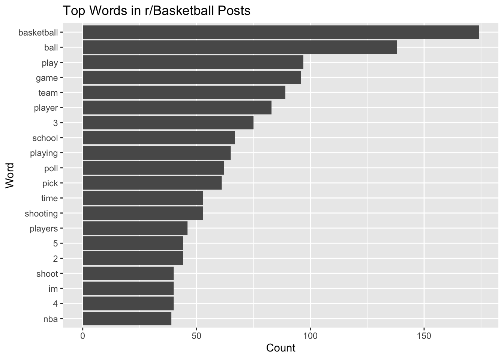
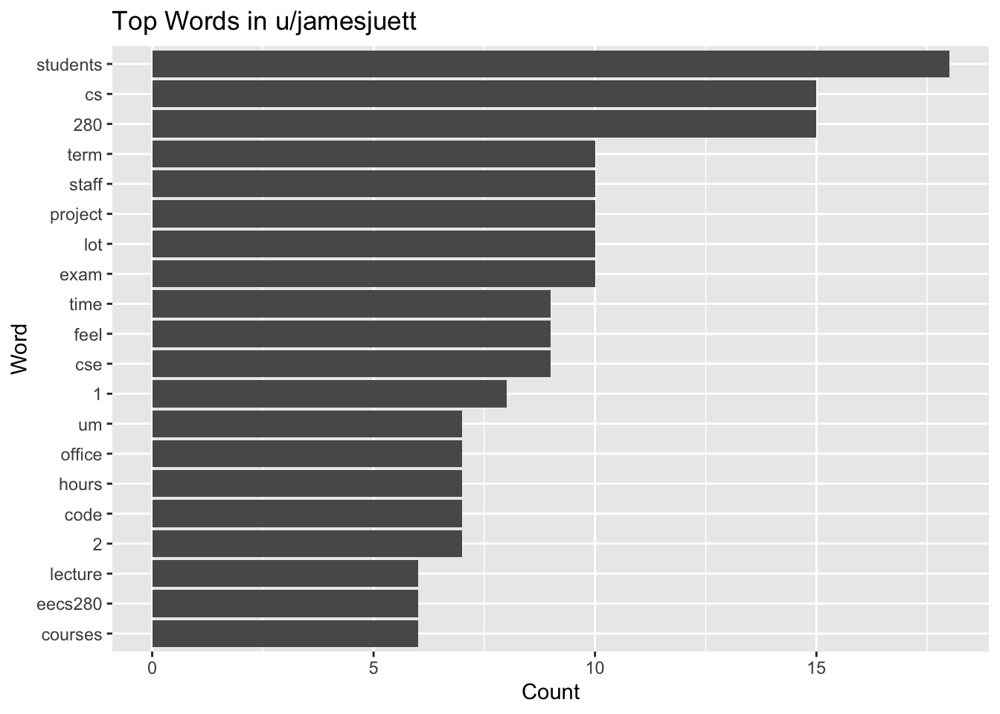

# install.packages("RedditExtractoR")
library(RedditExtractoR)
library(tidytext)
library(tidyverse)Homework 4
1. Pull some posts from a subreddit - you can choose the subreddit and if you want to specify particular keywords. Use your text analysis skills to calculate and visualize the top words, excluding stopwords. I’m being deliberately a big vague about how many words - see what looks informative depending on how much you are looking at, the content, etc.
# run this code interactively to save the rds file in your project folder
top_bb_urls <- find_thread_urls(subreddit="basketball", sort_by="top")
write_rds(top_bb_urls, "top_bb_urls.rds")# this code will run when rendering to read in the rds file
top_bb_urls <- read_rds("top_bb_urls.rds")
top_bb_words <- top_bb_urls |>
tibble() |>
unnest_tokens(word, text) |>
anti_join(stop_words) |>
count(word, sort = TRUE)Joining with `by = join_by(word)`top_bb_words |>
head(20) |>
ggplot(aes(x = reorder(word, n), y = n)) +
geom_bar(stat = "identity") +
coord_flip() +
labs(x = "Word", y = "Count", title = "Top Words in r/Basketball Posts")
- To practice working with lists, pull data on a specific user. It can be yourself if you like! Do a similar word frequency analysis based on their comments.
Render the html version of the document and share it as a webpage (not just repository) using GitHub Pages, in your Homework 4 repository (from p13). If you did not sign up for the student plan on GitHub, you will have to make sure your repository public to do so. If you want a private repository, make sure it is shared with me as a collaborator.
# run this code interactively to save the rds file in your project folder
jj_comments <- get_user_content(c("jamesjuett"))[[1]]$comments
write_rds(jj_comments, "jj_comments.rds")jj_comments <- read_rds("jj_comments.rds")
top_jj_words <- jj_comments |>
tibble() |>
unnest_tokens(word, comment) |>
anti_join(stop_words) |>
count(word, sort = TRUE)Joining with `by = join_by(word)`top_jj_words |>
head(20) |>
ggplot(aes(x = reorder(word, n), y = n)) +
geom_bar(stat = "identity") +
coord_flip() +
labs(x = "Word", y = "Count", title = "Top Words in u/jamesjuett")